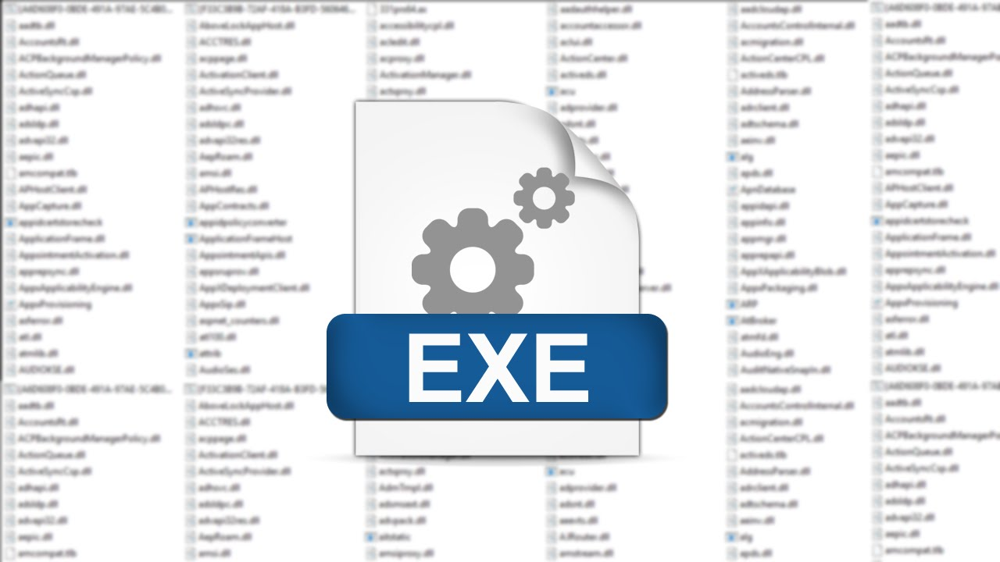
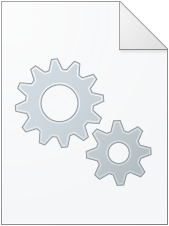

| Assembly | Dekompilacja | Narzedzia | Typy plikow | Metody inżynierii wstecznej | Kontakt |
EXE
Pliki EXE (Executable) to samodzielne aplikacje, które można uruchomić bezpośrednio w systemie operacyjnym Windows. Zawierają wszystkie niezbędne zasoby oraz kod, który jest wykonywany podczas uruchamiania programu. Pliki EXE mają swój własny punkt wejścia i są projektowane z myślą o bezpośrednim wykonaniu przez użytkownika lub system.
DLL
Pliki DLL (Dynamic Link Library) to biblioteki, które nie są samodzielnymi aplikacjami, lecz zawierają kod i zasoby współdzielone przez różne programy. Umożliwiają modularizację kodu, co pozwala na wielokrotne wykorzystanie tej samej biblioteki przez różne aplikacje bez konieczności powielania kodu. Gdy aplikacja potrzebuje funkcji lub zasobów z pliku DLL, ładuje go w momencie wykonywania.